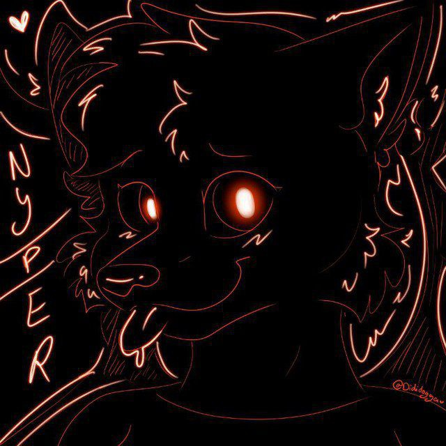

Decompilaciones
Artista & FNF
Music Visuals
Launcher & System
More Things :D
Vivo en Lima. Para escribir esto me hice una entrevista como si me la hiciera otra persona: estas son las preguntas que me planteé, y esto es lo que contesté.
Con jueguitos típicos hechos en Scratch a los 11 años, de esos de "presiona X y camina diez pasos en una dirección".
Entre 2016 y 2017, ya con un amigo, armé Sonic 2 Mixed Editions: un ROM hack de Sonic 2 que mezclaba niveles de la trilogía solo para entregar algo nuevo. Lo hicimos con Esrael Sonic Editor 2, una herramienta muy vieja que edita la ROM directamente. No teníamos experiencia con ASM hacking, así que nos arreglamos como pudimos.
Porque fueron los que más estuvieron en toda mi trayectoria. Sonic 1 de GBA —no confundir con el port de Stealth— fue el primer videojuego que toqué en mi vida, y Crash Team Racing el primero de Crash.
Recuerdo las tardes con mi hermana jugando carreras, y cómo me quitaban el control cuando ellas ya habían terminado: yo me quedaba apenas en la vuelta uno, porque se me daba por explorar el escenario en vez de correr.
Sonic y Crash significan, más que nada, los buenos momentos que pasé cuando era pequeña.
En sí no tenía interés en componer. Cuando los covers de Friday Night Funkin' empezaron a popularizarse quise intentarlo, porque me hacía gracia la idea de hacer covers con las voces de mis amigos o con la mía. Usaba UTAU porque no supe cómo se usaba Chromatics en ese tiempo.
Mucho tiempo después se me dio por FL Studio para hacer remixes, y de ahí di el salto a la composición original: Little Wolf of My Heart. Pensé que sería un experimento de una sola vez, pero seguí componiendo porque me encantaba cómo salían.
Hoy está en pausa. No quiere decir que no vuelva, solo que seguramente me tome más tiempo sacar la siguiente.
La idea nació de esta misma página. Intentaba hacer un portafolio propio para mostrar mis proyectos y terminé haciendo un mini sistema operativo donde puedes cargar tus propios programas y programar, si descargas studio.nexus desde el repositorio y lo cargas en la terminal. Se llamó NexusOS y pensaba llevarlo a las computadoras como un sistema 100% funcional.
La primera versión, nunca publicada, era Alpine Linux con un servidor de Node ejecutando la versión web de NexusOS. Funcionaba bien, pero la descarté porque era ineficiente. Retomando una fursona vieja que había dejado al aire nació NyxOS como lo conoces hoy: un Debian basado en Linux que busca ser un entorno amigable para desarrolladores nuevos, con un sistema optimizado que no consume hardware muy alto.
Su desarrollo está pausado porque no recibió la acogida que esperaba y no me motivé a seguir trabajando en ello. Pero es el sistema que uso actualmente, y aunque no haya sido bien recibido, me llena de orgullo por lo menos haber construido algo para mí.
Lo de Furry North+ no fue un rechazo dicho así. Se me pidió hacer una página web, se la mostré a uno de los administradores y le gustó cómo se veía para ser un concepto. Ahí quedó. Al parecer el resto no estaba interesado, pero nunca se me comunicó un rechazo propiamente: no volví a comentarlo y asumí que había sido rechazado.
MobiusCore es un caso diferente. Era un proyecto de comunidad de desarrolladores que apuntaba más a la comunidad de Sonic —el nombre lo delata—, con la idea de expandirla después. Nunca llamó suficiente la atención, así que no continué, y jamás abrió sus puertas. Puede que le dé otra oportunidad pronto.
Simplemente fue un reto. De la nada, en mi canal de Telegram, anuncié el 13 de noviembre de 2025 que me mudaría a Linux a ver cuánto aguantaba sin morir en el intento. Empecé con Linux Mint 22.2, y el 27 de marzo de 2026 di el salto a NyxOS: Mint era bueno, pero sentía que quería algo más personal.
Cuánto llevo ya sin mirar atrás lo calcula la página, no yo. Estoy bastante orgullosa, porque estoy muy cerca de cumplir el reto que me propuse, y le veo tanto futuro a Linux que sinceramente se va a convertir en mi sistema principal.
Por desgracia soy desempleada. Mi sueño es algún día trabajar como programadora, ya sea independientemente o para alguien: realmente amo la programación y quiero cumplir ese sueño.
Las cosas han estado difíciles. En Perú es complicado encontrar trabajo de esto con o sin titulación, y yo no tengo titulación porque por fuerza mayor abandoné mis estudios.
Quiero realizar proyectos grandes, muy ambiciosos, y que la gente los reciba con los brazos abiertos.
Mi fursona, Dragón-Zorro, es un homenaje a un viejo roleplay que solía hacer con mi exnovio por allá en 2017-2018, si mal no recuerdo. Buenos tiempos la verdad. A veces lo extraño mucho, pero la vida sigue.
Scratch. Primeros juegos: "presiona X y camina diez pasos".
Sonic 2 Mixed Editions. Mi primer ROM hack, hecho sin saber ASM.
Un roleplay de años con mi exnovio; de ahí sale el Dragón-Zorro que ves como avatar.
Covers de FNF en UTAU con las voces de mis amigos.
Little Wolf of My Heart. La primera canción que firmé como mía.
Me mudo a Linux. Mint 22.2.
NyxOS se convierte en mi sistema diario.
NyxOS en pausa, MobiusCore pide otra oportunidad, y yo busco dónde programar.
Si mis herramientas te han ahorrado tiempo o mi música te ha acompañado, considera apoyarme. Tu ayuda mantiene vivos estos proyectos gratuitos.
Gracias por ser parte del viaje